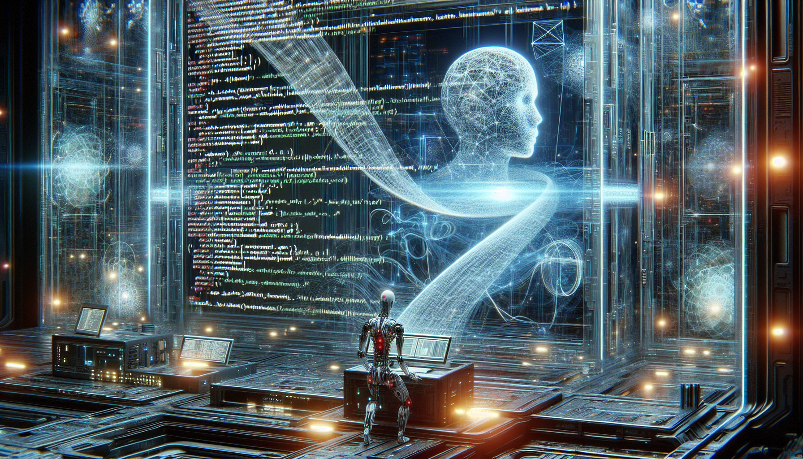

Python and the Future of AI
Python has become one of the most popular programming languages in recent years, and its versatility and user-friendly syntax make it a top choice for developers and data scientists working in the field of artificial intelligence (AI). With its numerous libraries and frameworks such as TensorFlow, PyTorch, and Keras, Python has become an essential tool for building and training machine learning models.
The future of AI is constantly evolving, and Python is playing a crucial role in its development. Its simplicity and readability make it ideal for rapid prototyping and experimentation, making it easier for researchers and developers to test and implement new ideas. Additionally, with the rise of deep learning and neural networks, Python's ability to handle large datasets and complex algorithms has made it a go-to language for building advanced AI systems. As the demand for AI continues to grow, it is safe to say that Python will remain a dominant force in shaping the future of this technology.